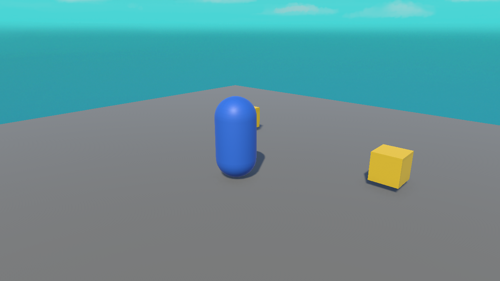

🔢 Lesson 6.2: A Live Score Counter
Now we connect the pieces: collecting an item adds a point, and a GameManager keeps the total and updates the on-screen text. This is the moment your game starts to feel like a game.
🎯 Learning Objectives
- Create a GameManager to hold the score
- Update a TextMeshPro label from code
- Reference the GameManager from the collectible to add points
- Understand a simple way for scripts to talk to each other
Estimated Time: 40 minutes
In This Lesson
The Goal
Every time the player collects a star, the score ticks up and the HUD shows the new total — live:

⭐ Score: 3The GameManager
A GameManager is a single object that owns game-wide data like the score. Create an empty GameObject named GameManager and attach this script:
using UnityEngine;
using TMPro; // needed for TextMeshPro
public class GameManager : MonoBehaviour
{
public TMP_Text scoreText; // drag the HUD text here in the Inspector
private int score = 0;
void Start()
{
UpdateScoreText();
}
public void AddPoint()
{
score = score + 1;
UpdateScoreText();
}
void UpdateScoreText()
{
scoreText.text = "Score: " + score;
}
}using TMPro;unlocks the TextMeshPro types.public TMP_Text scoreText;is a slot — drag your HUD text object into it in the Inspector.AddPoint()is public so the collectible can call it.
Wiring the Collectible
Update the Collectible script from Lesson 5.4 so that, on pickup, it finds the GameManager and adds a point:
void OnTriggerEnter(Collider other)
{
if (other.CompareTag("Player"))
{
// find the GameManager in the scene and score a point
GameManager gm = FindObjectOfType<GameManager>();
if (gm != null) gm.AddPoint();
Destroy(gameObject);
}
}Now: player touches star → collectible calls gm.AddPoint() → score increases → HUD text updates. Wire the text once (drag the HUD text into the GameManager's Score Text slot) and it all flows.
How Scripts Talk to Each Other
OnTriggerEnter] -->|calls| B[GameManager.AddPoint] B -->|updates| C[TMP_Text on the HUD]
We used FindObjectOfType<GameManager>() — a simple way for one script to grab another. It's perfect for learning. As projects grow you'll meet tidier patterns (like a singleton), but don't worry about that yet.
⚠️ NullReferenceException on scoreText?
You forgot to drag the HUD text object into the GameManager's Score Text slot. An empty slot means scoreText is nothing, and scoreText.text = ... throws. Drag it in.
Hands-on Exercise
🏋️ Exercise: Make it count
- Add a HUD text (Lesson 6.1) reading
Score: 0. - Create a
GameManagerobject with the script; drag the HUD text into its Score Text slot. - Update your
Collectibleto callAddPoint()on pickup. - Play, collect a few stars, and watch the score climb.
💡 Score doesn't change
Check: the HUD text is dragged into the GameManager slot; the collectible actually collects (three-must-haves from Lesson 5.4); and there's exactly one GameManager in the scene.
✅ Bonus: a win message
Add a total-stars count. When score reaches it, set the HUD text to "You win!". (We formalize win/lose in Module 7.)
🎯 Quick Quiz
Question 1: Why is AddPoint() marked public?
Question 2: What must you drag into the GameManager's Score Text slot?
Summary
🎉 Key Takeaways
- A GameManager holds game-wide data like the score.
- Update UI from code via a
TMP_Textreference andscoreText.text = ...(rememberusing TMPro;). - A collectible calls
gm.AddPoint()on pickup; wire the text slot in the Inspector. FindObjectOfType<GameManager>()is a simple way for scripts to find each other.
🚀 What's Next?
Numbers going up is good; a satisfying ding when it happens is better. Lesson 6.3 adds sound effects and music.